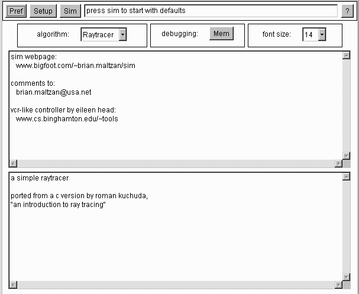

Preferences
The 'pref panel' allows the user to customize the way the simulator works.
There are 5 components embedded within the pref panel.
 The 'algorithm panel' lets the user select an algorithm to simulate.
The 'debugging panel' lets the user view the current total and free memory available.
The 'font panel' lets the user select the font size for most text displays.
The 'sim about panel' displays information about the simulator.
The 'algorithm about panel' displays information about the currently selected algorithm.